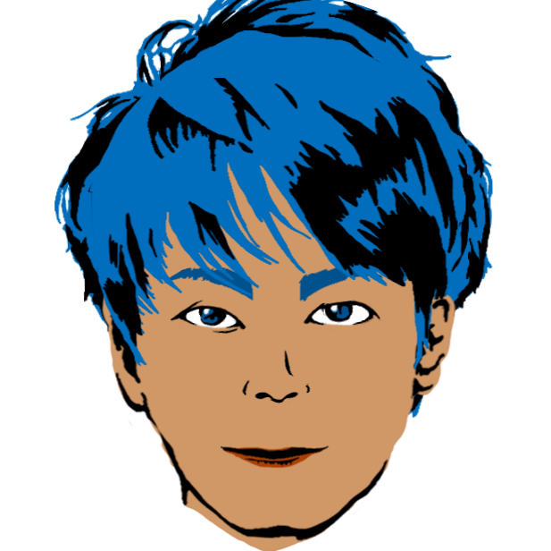

Kazushi Yamashina
Homepage
Profile
Blog
Studies
Works
Tips
Profile

名前
山科和史（やましなかずし）
所属
宇都宮大学大学院工学研究科情報システム科学専攻 修士2年
出身
山形県新庄市
誕生日
1992年11月8日
経歴
2011年 山形県立新庄北高校卒業
2015年 宇都宮大学卒業
2015年 宇都宮大学大学院入学
経験言語
C C++ Verilog HDL Ruby Python HTML Java Markdown（記法）
使用したことがあるOS
学校の環境：Windows、Ubuntu、Centos
マイPC：OS X（Macbook Air）
研究のキーワード
FPGA SW/HW協調設計システム・環境 コード自動生成
ロボット ROS コンポーネント指向
趣味
アルペンスキー
マイブーム
アウトドアブランドのモノを集めること（mont−bellが好き）
好きなもの
魚、餃子（別に宇都宮は関係ない笑）、ビール、ラーメン
好きなこと
食べること
© Untitled. All rights reserved. | Photos by
Fotogrph
| Design by
TEMPLATED
.